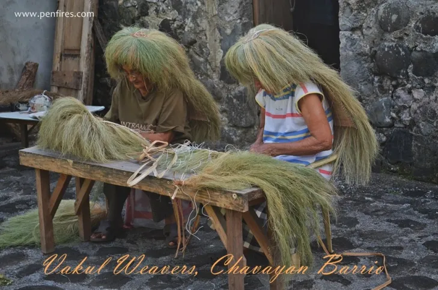
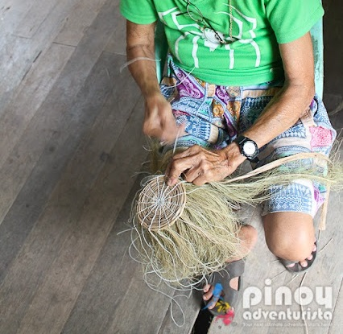

Craftsmanship: Basketry and Weaving
- Ivatan Basketry: Utilizing local materials, these baskets serve various purposes, from daily chores to ceremonial uses.


- Salakot Hat Weaving: Crafting traditional wide-brimmed hats that provide protection from the elements.


These crafts are integral to the community's daily life and are recognized as vital elements of their intangible cultural heritage.